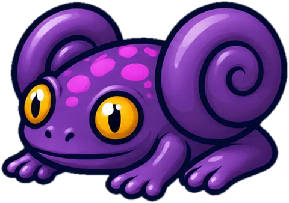

 PsychicPoison
PsychicPoisonTap a stage to read its story.
A small purple chameleon with a thick coiled tail curled against its body, Spiramite watches the bug thicket through wide amber-gold eyes that move independently. Its round spotted body has a spiral marking on its flank that glows faintly when it is thinking hard - which appears to be always. It changes its skin between two shades of purple rather than a full colour range, which makes it easy to spot for those who know where to look. It eats only the brightly coloured bugs it has seen at least twice before.
Field note: Spiramite counts to three before doing anything - blink, step, or eat - as though checking something no one else can see.
Bug Thicket. Spiramite and its family are found in the Bug Thicket. See everyone who lives there.
Share a Bond Food that matches its types to become friends. Spiramite loves:
A Bond Food is not a trick. It joins your spirit with the Kimuro's spirit, and only when it chooses you.
Print the Kimuro adventure packs: mazes, cards, a board game and Bond Mark medals.
See the printable packs